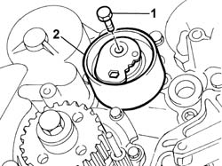
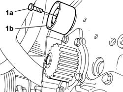
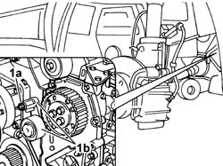
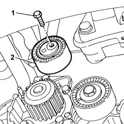

1032C10 MOVING TIMING TENSIONER - R.R. WITH TIMING BELT/CHAIN REMOVED
- Path
- Procedures > 10 ENGINE UNIT > 1032 TIMING SYSTEM > 1032C TIMING SYSTEM TENSIONERS > 1032C10 MOVING TIMING TENSIONER - R.R. WITH TIMING BELT/CHAIN REMOVED
- Kind
- repair procedure (removal / refitting; the operation number is the code)
- Applies to
- all engines; all production periods
- Interactive page
- https://sloeber94.github.io/elrnDB-fDct/en/#/244000706
Applies to: engines: 2.3 JTD 16V; all production periods
 Removing
Removing
 Refitting
Refitting1. Undo the fixing bolt.
2. Remove the timing belt moving tensioner.

Applies to: engines: 2.3 JTD 16V; all production periods
Refitting
Removing- Fit the timing belt moving tensioner.
- Screw in the fixing bolt without tightening it.
Applies to: engines: 2.0 16V; all production periods
Removing
Refitting1. Undo the fixing bolt (1a) and remove the moving tensioner (1b).

Applies to: engines: 2.0 16V; all production periods
Refitting
Removing- Position the moving tensioner in the housing and screw in the fixing bolt without tightening it.
Applies to: all engines; all production periods
Removing
Refitting1. Undo the fixing bolt (1a) and remove the tensioner (1b).

Applies to: all engines; all production periods
Refitting
Removing- Fit the tensioner and tighten the fixing bolt to torque.
 | Value - daNm | Fastening | Component | Ø |
|---|---|---|---|---|
. | 2,5 | Bolt | MOBILE TIMING TENSIONER | - |
Applies to: engines: 2.0 JTD 8V; all production periods
Removing
Refitting1. Undo the fixing bolt.
- Remove the timing belt moving tensioner.

Applies to: engines: 2.0 JTD 8V; all production periods
Refitting
Removing- Fit the timing belt moving tensioner.
- Screw in the fixing bolt without tightening it to torque.